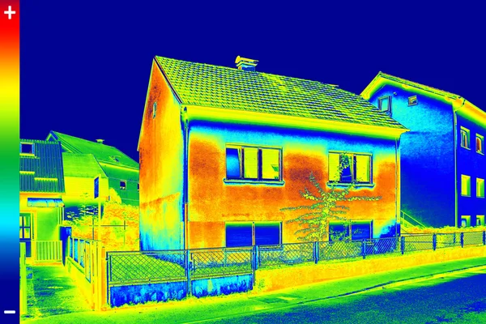

Conclusion
Les autres réseaux de communication
En plus du Li-Fi et du WiMAX, il existe encore beaucoup de systèmes de communication sans fil que je n'ai pas
traité dans se site comme les Technologies Infrarouges, le Wusb ou encore le ZigBee.

Vous trouverez les informations nécéssaires sur ce site. Et si cela ne vous semble pas assez, vous savez ce qu'on dit : "Internet est mon ami" ;) !